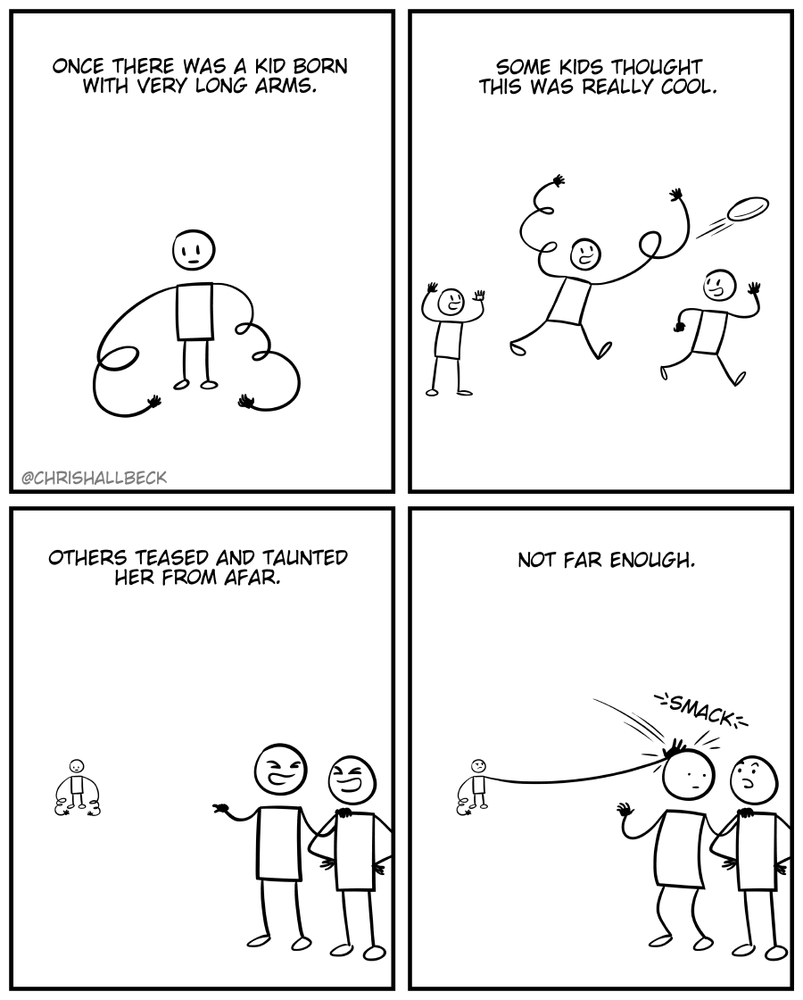

Happy Tuesday! Thank you for supporting the Daily Bulletin project.
- Book a meeting with the WellCo chairs.
- Provide feedback to WellCo through the WellCo Line.
- Sign up to take over a WellCo session.
- Suggest improvements to the Daily Bulletin project.
- Unsubscribe if you no longer wish to receive emails from the Daily Bulletin project.
Wellbeing Inspirations
Want to contribute to a future Daily Bulletin? Share your inspirations to give everyone some morning wellbeing energy!
Meme of the Day

Created by Chris Hallbeck.
Delicious Dinings
| Day | Meal | Options |
|---|---|---|
| Tue | Breakfast | Continental Counter |
| Lunch | Crispy Tofu üå± | |
| Dinner | Chicken & Mushroom in Tomato & Basil Sauce | |
| Cauliflower Bake üå± | ||
| Wed | Breakfast | Hot Breakfast |
| Lunch | Turkey & Mushroom Fricassee | |
| Falafel w/ Roast Courgette & Tomato Pesto üå± | ||
| Dinner | Vegetarian Nasi Goreng Pea Protein üå± | |
| Sesame Roast Green Beans üå± |
Retrieved from Shared Weekly Menu. For reference only; accuracy not guaranteed.
Important Events
| Day | Time | Event | Location |
|---|---|---|---|
| Tue | 19:30–20:30 | FEMO | Great Hall |
| 20:30–21:30 | Candelight Vigil | Bradenstoke | |
| Wed | 17:00–19:00 | Wellbeing Drop-in | Health Centre |
| 19:30–20:30 | WellCo ☀️ | — | |
| 20:30–21:30 | Open House | Emilia's House |
Retrieved from What's On This Week.
Today in History
- 1913 – Ford Motor Company introduced the first moving vehicle assembly line.
- 1944 – World War II: The Sonderkommando Revolt in Auschwitz, an uprising of prisoners (especially the Sonderkommando) at the Auschwitz concentration camp, burnt down Crematorium IV.
Retrieved from Wikipedia.